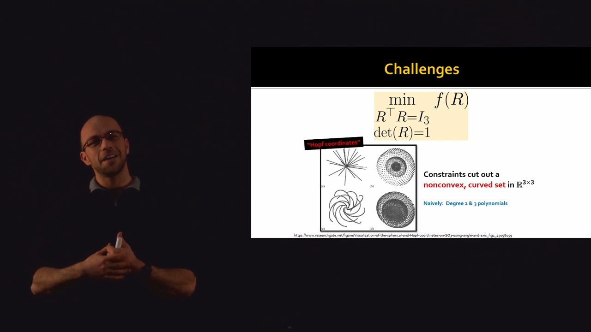
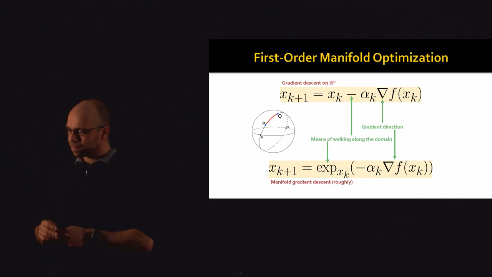
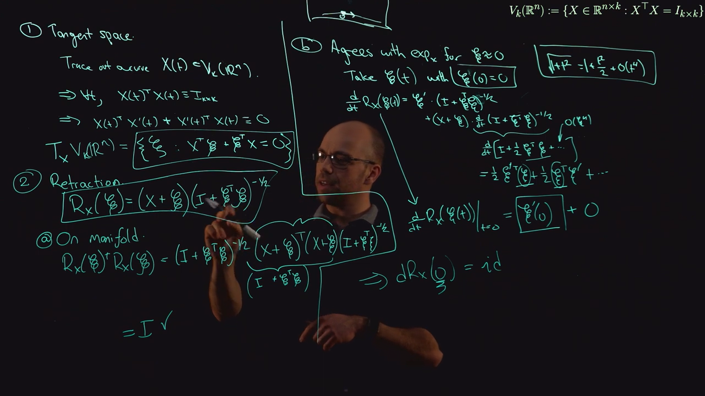
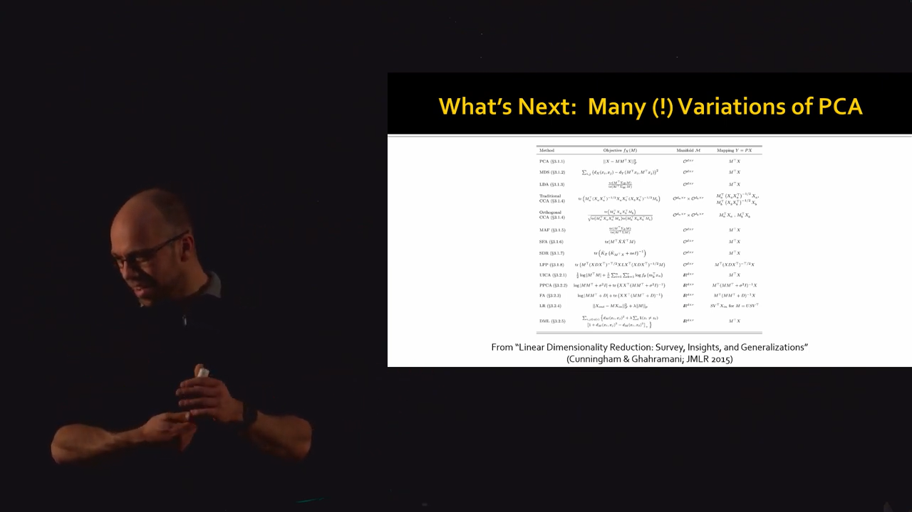
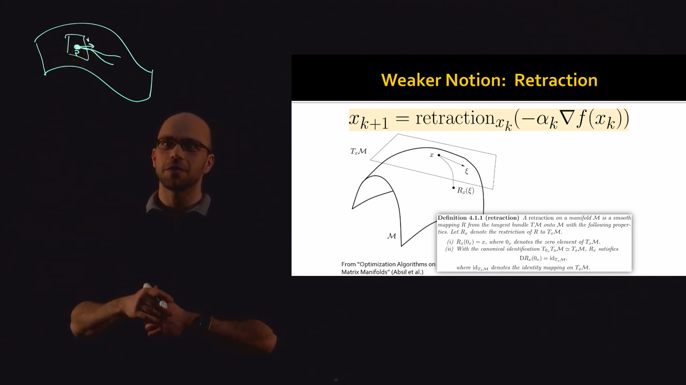
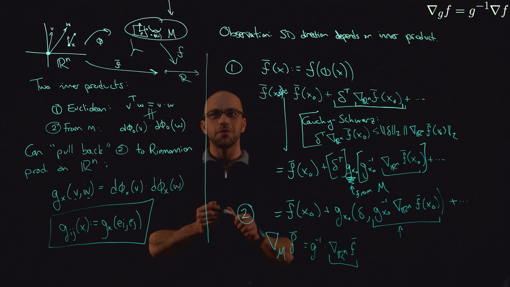

Optimization on Manifolds
Table of Contents
MIT EECS 6838
1. Optimization in Manifold
A common optimization problem is:
\begin{equation*} \min_{x \in \mathcal{M}} f(x) \end{equation*}where the manifold \(\mathcal{M}\) can be
- Euclidean Space \(\mathbb{R}^n\)
- Unit Sphere \(S^{n-1}\)
Rotation Group \(SO(n)\)
e.g. image of protein frozen in a solution will give sample of protein images from different rotation. And an optimization probelm in terms of Rotation Group can be used to reconstruct the full 3D structure of protein. (00:04:08 Cryo-EM)
2. Embedding makes optimization difficult
00:06:59 A typical approach is to embed the manifold in a larger space, and write the problem as a constrained optimization problem.
E.g.
\begin{equation*} \min_{R \in SO(3)} f(R) \to \min_{R^TR = I_3; \det(R) = 1} f(R) \end{equation*}00:08:48 But embedding it to \(\mathbb{R}^{3 \times 3}\) increases the difficulty of the problem. The constrain cut out a nonconvex, curved set in the embedding space.

Figure 1: Using constraints makes optimization difficult
00:10:27 Also optimization this way is not straightforward. The objective wants to move to one direction but the constraint wants to keep the variables in another direction.
00:10:57 We could do step and project. But projecting a point in to a complex constraint is not always straightforward.
3. Intrinsic Approach
00:12:04 Optimize the problem in the intrinsic space of the Manifold.
3.1. Gradient Descent
There are two main aspect to Gradient Descent:
- Gradient direction \(\nabla f(x_k)\)
- Walking along the domain (i.e. taking the difference)
On a Sphere, we can take derivative (i.e. find tangent) using laplace operator. (?)
00:17:25 In a Sphere, an exponential map moves a point on the Sphere. It takes a point on the manifold and a tangent vector at that point. And moves it along a geodesic.
This allows us to use gradient descent like algorithm in an intrinsic way.
\begin{equation*} x_{k+1} = \exp_{x_k}(-\alpha_k \nabla f(x_k)) \end{equation*}
Figure 2: First-Order Manifold Optimization
00:19:00 The benefits of this approach is:
- Better alogrithms
- Automatic constraint satisfaction
- specialized to the space
- Theoritical perspective:
- Generalize convexity
- Gradient Descent and other methods have analogues
00:19:45 Books and Resources:
- Optimization Algorithms on Matrix Manifolds
- https://manopt.org
- An introduction to Optimization on Smooth Manifolds (https://nicolasboumal.net/#book)
00:26:41 Gradient descent is a first order algorithm. So instead of the difficult to compute Exponential Map, we can use a Retraction Map instead which is same as Exponential Map only upto first order.
4. Unit Sphere
Tangent Space of Sphere at point \(p\) is the space of points that are orthogonal to point \(p\):
\begin{equation*} T_p S^{n-1} = { v \in \mathbb{R}^n: v \cdot p = 0} \end{equation*}Our optimation problem is:
\begin{equation*} \min_x x^T A x \end{equation*} \begin{equation*} x \in S^{n-1} \end{equation*}4.1. Computing gradient
We can view the objective function on the sphere as a restriction of an objective function on all of \(\mathbb{R}^n\).
In this case (Sphere) if we want the intrinsic gradient of the function f, we can compute the extrinsic gradient in \(\mathbb{R}^n\) and projecting it to the tangent space.
\begin{equation*} \nabla_{S^{n-1}} f (p) = (I_{n \times n} - pp^T) \nabla_{\mathbb{R}^n} f(p) \end{equation*}4.2. Retraction
For gradient descent, we need a gradient in the intrinsic space and also a retraction. In this case there are two (typical) options for a retraction: Exponential Map and Projection.
4.2.1. Exponential Map
This function maps a direction to a point on the sphere that is a \(||v||\) distance from p along the geodesic on that direction.
4.2.2. Projection
Take a gradient step off of the sphere and project it back orthogonally.
\(R_p(v)\) and \(\exp_p(v)\) don't match when \(v\) is large, but they are same locally.
5. Stiefel Manifold
A manifold of matrices with \(k\) orthonormal columns.
If \(k=1\) this is same as \(S^{n-1}\).
00:53:32 For manifold optimization we need to define:
- Tangent Space
- Projection on the tangent space
- Retraction

Figure 3: Tangent Space and Retraction for Stiefel Manifold
6. Reyleigh Quotient Minimization
01:17:36 This is equivalent to computing the eigenvector of the mininum eigenvalue of \(A\), as indicated below:
\begin{equation*} \Lambda(x; \lambda) = \frac 1 2 x^T A x + \lambda (\frac 1 2 - \frac 1 2 ||x||^2_2) \end{equation*} \begin{equation*} 0 = \nabla_x \Lambda = Ax - \lambda x \implies Ax = \lambda x \end{equation*}We then define then tangent space and reduction map and then iterate to find the solution.
Also, to find the eigenvector of any other eignevalue, we can formulate another problem:
\begin{equation*} \widetilde{f}(x) = ||\nabla_{S^{n-1}} (\frac 1 2 x^T A x)||_2^2 \end{equation*}Because the gradient is zero at eigenvector location. And the l2 norm makes those zero value the minima of \(\widetilde{f}\).
7. Different Variations of PCA as objective functions
01:21:18 Optimizing on Stiefel Manifold corresponds to computing PCA.

Figure 4: Table of PCA Variations
01:22:13 For each variant of PCA, we could figure out a custom optimizer. Or we could just use the generic gradient descent algorithm in the manifold of PCA with the objective functions regularized in various ways.
8. Maths
8.1. Differential
00:21:21 Analogue of derivative
\begin{equation*} df_{x_0} (v) = \lim_{h \to 0} \frac {f(x_0 + h v) - f(x_0)} h \end{equation*} \begin{equation*} df_{x_0}(v) = Df(x_0) \cdot v \end{equation*}8.2. Tangent Space
00:21:49 Set of tangent vectors at a point.
8.3. Exponential Map
where \(\gamma_v\) is (unique) geodesic from \(p\) with velocity \(v\).
8.4. Retraction
00:23:50 In general the geodesics curve are difficult to compute. But we don't always need a perfect geodesic.
We can replace the Exponential Map with a Retraction. Which is a weaker notion of exponential map. They are same only upto first order.

Figure 5: Retraction
8.5. Riemannain Manifold
00:28:16 Pair \((M,g)\) of a differentiable manifold \(M\) and a pointwise positive definite inner product per point.
\(g_p(\cdot, \cdot): T_p M \times T_p M \to \mathbb{R}\)
\(g_p\) is symmetric, bilinear, & positive definite form.
8.6. Riemannian Gradient
- Metric tensor \(g \in \mathbb{R}^{n \times n}\)
Gradient in coordinates \(\nabla f \in \mathbb{R}^n\)
\begin{equation*} \nabla_g f = g^{-1} \nabla f \end{equation*}
\(\phi\) is maps a parametrization of \(M\) in \(\mathbb{R}^n\) to \(M\)

Figure 6: Gradient in Riemannian Manifold